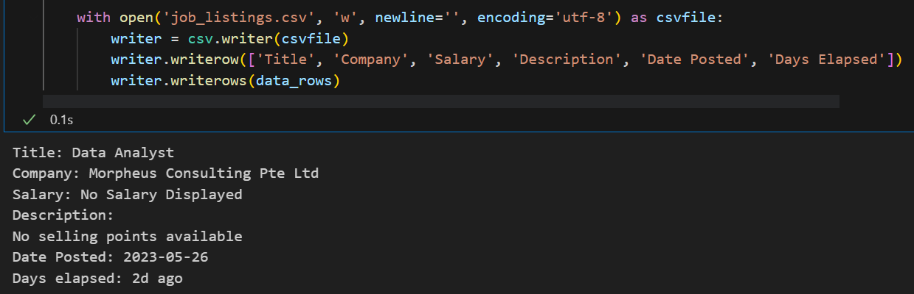
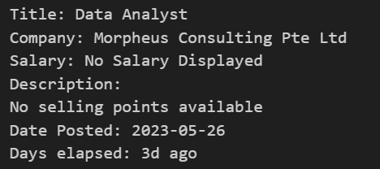

Description
Employ the technique of web scraping to gain comprehensive insights into the diverse Data Analyst job listings available on JobStreet, enabling you to explore a wide range of promising career prospects.
Skills Applied: Python
Libraries Used: csv, requests, BeautifulSoup
Implementation
- To begin, I examine the source code of the webpage I intend to scrape for relevant information.
- Next, I aim to fetch webpage content from a URL using the requests library. It then employs BeautifulSoup to parse the HTML and create a structured representation of the webpage. Specifically, it extracts all elements with the specified class names and saves them in the job_listings variable for later use.
- Subsequently, I would print the extracted information from each job listing as per my requirements.
- Lastly, I will store all the collected data in a CSV file.
Breakdown
PYTHON
1. Importing Libraries

- I start the project by importing the necessary libraries (csv, requests, BeautifulSoup)
2. Extract Raw HTML

- Next, I fetch the HTML content from a Jobstreet webpage for Data Analyst jobs in Singapore.
- It then extracts the job listings by finding specific elements with the provided class names.
- The length of the job_listings variable is obtained to determine the number of job postings on the page.
3. Scrape Information

-
Subsequently, I used a For Loop to iterate through each job listing in the job_listings variable.
For each listing, it extracts the following using specific HTML elements and class names:
- Title
- Company Name
- Salary
- Description
- Date Posted
- How long ago it was posted
4. Print Scraped Information

- I print out all the scraped information to make sure everything is scraped correctly.
5. Save data to CSV

- Finally, I store all the extracted data into a CSV file for convenient reference and potential future analysis.
Important Note:
This scraping is only for one page. For multiple pages, please refer to this code.
Preview